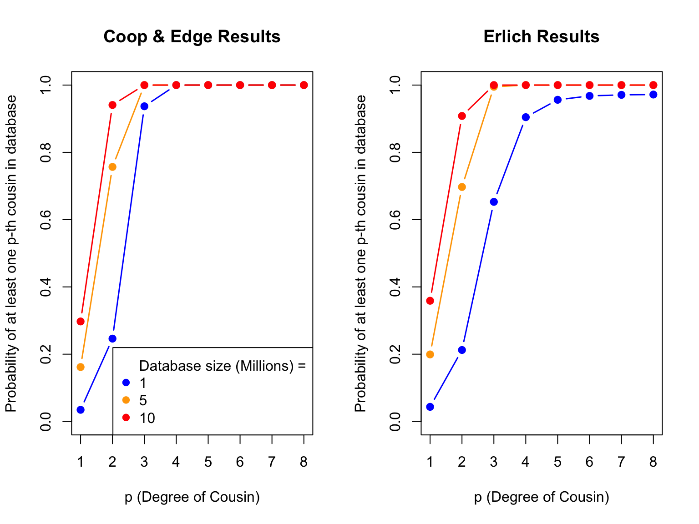

Methods
Tina Lasisi
2024-03-03 20:03:31
Last updated: 2024-03-03
Checks: 7 0
Knit directory: PODFRIDGE/
This reproducible R Markdown analysis was created with workflowr (version 1.7.1). The Checks tab describes the reproducibility checks that were applied when the results were created. The Past versions tab lists the development history.
Great! Since the R Markdown file has been committed to the Git repository, you know the exact version of the code that produced these results.
Great job! The global environment was empty. Objects defined in the global environment can affect the analysis in your R Markdown file in unknown ways. For reproduciblity it’s best to always run the code in an empty environment.
The command set.seed(20230302) was run prior to running
the code in the R Markdown file. Setting a seed ensures that any results
that rely on randomness, e.g. subsampling or permutations, are
reproducible.
Great job! Recording the operating system, R version, and package versions is critical for reproducibility.
Nice! There were no cached chunks for this analysis, so you can be confident that you successfully produced the results during this run.
Great job! Using relative paths to the files within your workflowr project makes it easier to run your code on other machines.
Great! You are using Git for version control. Tracking code development and connecting the code version to the results is critical for reproducibility.
The results in this page were generated with repository version 2596546. See the Past versions tab to see a history of the changes made to the R Markdown and HTML files.
Note that you need to be careful to ensure that all relevant files for
the analysis have been committed to Git prior to generating the results
(you can use wflow_publish or
wflow_git_commit). workflowr only checks the R Markdown
file, but you know if there are other scripts or data files that it
depends on. Below is the status of the Git repository when the results
were generated:
Ignored files:
Ignored: .DS_Store
Ignored: .Rhistory
Ignored: .Rproj.user/
Ignored: analysis/.DS_Store
Ignored: output/.DS_Store
Note that any generated files, e.g. HTML, png, CSS, etc., are not included in this status report because it is ok for generated content to have uncommitted changes.
These are the previous versions of the repository in which changes were
made to the R Markdown (analysis/methods.Rmd) and HTML
(docs/methods.html) files. If you’ve configured a remote
Git repository (see ?wflow_git_remote), click on the
hyperlinks in the table below to view the files as they were in that
past version.
| File | Version | Author | Date | Message |
|---|---|---|---|---|
| html | 48acb9f | Tina Lasisi | 2024-03-02 | Build site. |
| html | aa3ff5c | Tina Lasisi | 2024-03-01 | Build site. |
| html | 9e71347 | Tina Lasisi | 2024-01-22 | Build site. |
| Rmd | 6e2b61a | GitHub | 2023-06-27 | singular |
| html | c280b6f | Tina Lasisi | 2023-04-16 | Build site. |
| html | f89a90f | Tina Lasisi | 2023-04-16 | Build site. |
| Rmd | dbad021 | Tina Lasisi | 2023-04-11 | Update methods |
| html | dbad021 | Tina Lasisi | 2023-04-11 | Update methods |
| html | 2a436aa | Tina Lasisi | 2023-04-10 | Build site. |
| Rmd | 97753d6 | Tina Lasisi | 2023-04-10 | wflow_publish("analysis/methods.Rmd") |
| html | d97face | Tina Lasisi | 2023-04-10 | Build site. |
| Rmd | 20f1d6c | Tina Lasisi | 2023-04-10 | wflow_publish("analysis/methods.Rmd") |
| Rmd | f4a00f4 | Tina Lasisi | 2023-04-08 | Typo |
| html | 799679a | Tina Lasisi | 2023-03-27 | Build site. |
| Rmd | 249447b | Tina Lasisi | 2023-03-27 | questions in original code |
| html | 627214d | Tina Lasisi | 2023-03-23 | Update methods.html |
| Rmd | 6605057 | Tina Lasisi | 2023-03-20 | Update parameters for generations |
| html | 5f805fe | Tina Lasisi | 2023-03-06 | Build site. |
| Rmd | e912cb8 | Tina Lasisi | 2023-03-06 | Updating methods and adding data |
| html | 37a3d63 | Tina Lasisi | 2023-03-04 | Build site. |
| Rmd | c02c427 | Tina Lasisi | 2023-03-04 | update methods |
| html | 342c5a3 | Tina Lasisi | 2023-03-04 | Build site. |
| Rmd | ea3444e | Tina Lasisi | 2023-03-04 | update methods |
| html | 2b161f2 | Tina Lasisi | 2023-03-04 | Build site. |
| Rmd | d8748aa | Tina Lasisi | 2023-03-04 | wflow_publish("analysis/methods.Rmd") |
| html | c3948af | Tina Lasisi | 2023-03-04 | Build site. |
| Rmd | ce722bc | Tina Lasisi | 2023-03-04 | update website |
| Rmd | a3af2d6 | Tina Lasisi | 2023-03-03 | Updating images and methods page |
| html | a3af2d6 | Tina Lasisi | 2023-03-03 | Updating images and methods page |
| html | f02bc38 | Tina Lasisi | 2023-03-03 | Build site. |
| html | c9130d5 | Tina Lasisi | 2023-03-03 | wflow_git_commit(all = TRUE) |
| html | a4a7d45 | Tina Lasisi | 2023-03-03 | Build site. |
| html | 00073fd | Tina Lasisi | 2023-03-03 | Build site. |
| Rmd | d6a84df | Tina Lasisi | 2023-03-03 | Update website |
| html | 51ed5a6 | Tina Lasisi | 2023-03-02 | Build site. |
| Rmd | 13ed9ae | Tina Lasisi | 2023-03-02 | Publishing POPFORGE |
| html | 13ed9ae | Tina Lasisi | 2023-03-02 | Publishing POPFORGE |
Long-Range Familial Searching
Coop & Edge 2019
Coop & Edge (2019) use a population genetics approach to estimate the likelihood of finding a genetic relative in a database. They assume that two individuals are related if they share a certain number of genetic blocks, which is determined by the degree of relatedness (e.g. first cousin, second cousin, etc.). Using this assumption, they calculate the expected number of blocks shared between two individuals of a given degree of relatedness based on the size of the genetic database and the population size. They then uses the Poisson distribution to estimate the probability of finding at least one relative of a given degree of relatedness in a database of a certain size.
The original code can be found here.
Below is an adaptation of the code for demonstration purposes with annotations for clarification.
Population and Database Size Estimation
In the code chunk below, we make several assumptions about the population size of possible ancestors based on data from the US census. The assumptions used in the analysis include an average time of 30 years between generations, and a population size for the relevant time period calculated as the size of the population in 1950, adjusted for the number of generations separating the individuals in question.
Additionally, it is assumed that about half of individuals in the population are potentially parents, and 90% of those individuals have children. The minimum population size is set to 1 million for populations smaller than that, and a vector of database sizes is created to test the expected number of cousins in a database of various sizes.
# Load necessary packages
library(wesanderson) # for color palettes
# Set path to the data file
path <- "./data/"
savepath <- "./output/"
# Set up vector for cousin degree
p <- c(1:8)
# Set up initial population size
N <- 76e6
# Read in data on US population sizes by year
US_pop <- read.csv(paste(path, "US_popsize.csv", sep = ""))
# Calculate number of grandparents by generation
p_grandpar_gen <- 1950 - 30 * (p + 1)
# Determine which years match the grandparents' generation
these.years <- match(p_grandpar_gen, US_pop$Year)
# Get population sizes by year for grandparents' generation
US_Ns <- US_pop$Population[these.years]
# Scale population size down by 50% (assumed number of potential parents) and 90% of those have children
N <- US_Ns
N <- N * 0.5 * 0.9
# Set minimum population size for small populations
N[US_Ns < 1e6] <- 1e6 # is this in the correct order?
# Set up vector of database sizes to test
DB.sizes <- c(1e6, 5e6, 10e6)
# Set color palette for graphs
my.cols <- wes_palette("Darjeeling1")Probability of p-th degree cousin and number of p-th degree cousins
The code below calculates the probability of having at least one p-th cousin in the database and the expected number of p-th cousins in the sample for different database sizes. The first plot shows the probability of having at least one p-th cousin in the database based on the degree of relatedness and the size of the database. The second plot shows the expected number of p-th cousins in the sample for different database sizes.
layout(t(1:2))
# Plot probability of having at least one p-th cousin in database
plot(c(1, 8), c(0, 1), type = "n", ylab = "Probability of at least one p-th cousin in database", xlab = "p (degree of cousin)")
sapply(1:length(DB.sizes), function(i) {
DB.size <- DB.sizes[i]
prob.no.rellys <- exp(-2^(2*p - 2) * DB.size / N)
points(p, 1 - prob.no.rellys, type = "b", col = my.cols[i], pch = 19, lwd = 1.5)
})[[1]]
NULL
[[2]]
NULL
[[3]]
NULLlegend(x = "bottomright", legend = c("Database size (Millions) =", format(DB.sizes / 1e6, dig = 1)), col = c(NA, my.cols), pch = 19)
# Plot of expected number of p-th cousins in sample
plot(c(1,8),c(0,1000),type="n",ylab="Expected number of p-th cousins in database",xlab="p.(degree of cousin)")
sapply(1:length(DB.sizes),function(i){
num.cousins<-4^(p)*DB.sizes[i]/(N/2)
points(p,num.cousins,type="b",col=my.cols[i],lwd=1.5,pch=19)
# points(p,4^(p),type="b",col="black")
})
The plot above displays the probability of having at least one p-th cousin in a genetic database and the expected number of p-th cousins in a database. The left plot shows the probability of finding at least one p-th cousin in a database of a given size, and the right plot shows the expected number of p-th cousins in a database of a given size based on the number of genetic blocks shared.
| Version | Author | Date |
|---|---|---|
| 342c5a3 | Tina Lasisi | 2023-03-04 |
[[1]]
NULL
[[2]]
NULL
[[3]]
NULLProbability of a genetically detectable cousin
Below, we calculate the expected number of shared blocks of genetic material between cousins of varying degrees of relatedness. This is important because the probability of detecting genetic material that is shared between two individuals decreases as the degree of relatedness between them decreases. The code uses a Poisson distribution assumption to estimate the probability of two cousins sharing at least one, two, or three blocks of genetic material, based on the expected number of shared blocks of genetic material calculated from previous research.
# The variable 'meiosis' represents the number of meiosis events between cousins, where 'p' is the degree of relatedness (i.e. p = 1 for first cousins, p = 2 for second cousins, etc.)
meiosis <- p + 1
## Expected number of blocks shared between cousins
# 'E.num.blocks' is the expected number of blocks of shared genetic material between cousins based on the degree of relatedness and the number of meiosis events between them. This value is calculated based on previous research and is not calculated in this code.
E.num.blocks <- 2 * (33.8 * (2 * meiosis) + 22) / (2^(2 * meiosis - 1))
## Use Poisson assumption
# 'Prob.genetic' is the probability of two cousins sharing at least one block of genetic material based on the expected number of shared blocks calculated in the previous step. The calculation uses a Poisson distribution assumption.
Prob.genetic <- 1 - exp(-E.num.blocks)
# 'prob.g.e.2.blocks' is the probability of two cousins sharing at least two blocks of genetic material based on the expected number of shared blocks calculated in the previous step. The calculation uses a Poisson distribution assumption.
prob.g.e.2.blocks <- 1 - sapply(E.num.blocks, function(expected.num) {sum(dpois(0:1, expected.num))})
# 'prob.g.e.3.blocks' is the probability of two cousins sharing at least three blocks of genetic material based on the expected number of shared blocks calculated in the previous step. The calculation uses a Poisson distribution assumption.
prob.g.e.3.blocks <- 1 - sapply(E.num.blocks, function(expected.num) {sum(dpois(0:2, expected.num))})## Plot for number of shared blocks with p-th degree cousins
# Set layout of plot
layout(t(1))
# Set color palette for plot
my.cols2<-wes_palette("FantasticFox1")[3:5]
# Create a blank plot with labeled axes
plot(c(1,8),c(0,1),type="n",ylab="Probability p-th cousin \"detectable\"",xlab="p.(degree of cousin)")
# Add points for probability of detecting pth cousin with genomic blocks using colors from my.cols2
points(p,Prob.genetic,col=my.cols2[1],pch=19,type="b",lwd=2)
points(p,prob.g.e.2.blocks,col=my.cols2[2],pch=19,type="b",lwd=2)
points(p,prob.g.e.3.blocks,col=my.cols2[3],pch=19,type="b",lwd=2)
# Add a legend to the plot
legend(x="topright",legend=c("Cousins (w. >0 genomic blocks)","Cousins (w. >1 genomic blocks)","Cousins (w. >2 genomic blocks)"),col=my.cols2[1:3],lty=1)Probabilities of detecting a genetic cousin in a database based on shared genomic blocks. Blue lines represent cousins with at least one genomic block, orange dotted and red lines represent cousins with at least two and three genomic blocks, respectively. The legend specifies the type of cousin being represented by each line.
| Version | Author | Date |
|---|---|---|
| 342c5a3 | Tina Lasisi | 2023-03-04 |
## Plot for expected number of p-th degree cousins in a given database
# Set the layout of the plot
layout(t(1))
# Create a plot with the y-axis ranging from 0 to 350 and the x-axis ranging from 1 to 8, labeled as "Expected number of genetic p-th cousins in database" and "p. (degree of cousin)", respectively
plot(c(1,8),c(0,350),type="n",ylab="Expected number of genetic p-th cousins in database",xlab="p. (degree of cousin)")
# For each database size, calculate the expected number of genetic cousins based on the size of the database, the total number of individuals in the population, and the expected number of blocks of shared genetic material between cousins. Multiply the number of expected genetic cousins by the probability of sharing at least three blocks of genetic material with a cousin, and plot the result as a line on the plot. Repeat this for each database size.
sapply(1:length(DB.sizes),function(i){
num.cousins<-4^(p)*DB.sizes[i]/(N/2)
points(p,num.cousins*prob.g.e.3.blocks,type="b",lty=1,col=my.cols[i])
})[[1]]
NULL
[[2]]
NULL
[[3]]
NULL# Create a legend for the plot that explains what each line represents, including the legend for the database size
my.leg <- c(c("Genetic Cousins", ">2 blocks"), c("Database size (Millions)=", format(DB.sizes/1e6, dig=1)))
legend(x="topright",legend=my.leg,col=c(NA,rep("black",1),NA,my.cols),lty=c(NA,1:2,rep(NA,3)),pch=c(rep(NA,3),rep(19,3)))
This figure shows the expected number of genetic relatives of degree p in a database of a given size. The x-axis represents the degree of relatedness, while the y-axis represents the expected number of genetic relatives. Each line represents a different database size.
| Version | Author | Date |
|---|---|---|
| 342c5a3 | Tina Lasisi | 2023-03-04 |
Erlich et al 2018
The authors carried out a detailed investigation to find out how likely it is to identify a person using long-range familial searches with genetic data from direct-to-consumer databases. The goal was to understand the privacy risks related to DNA data and its consequences for law enforcement and research studies. To do this, the authors created various mathematical models that considered factors like the size of the population, the size of the database, and the criteria for finding matches. They also took into account different types of relationships, such as regular cousins and once-removed cousins.
The R code provided with the study includes functions that implement these models and methods, which allows users to assess the likelihood of identifying a person through long-range familial searches. The authors used population genetics models to estimate the probabilities of finding relatives with specific amounts of shared DNA, known as identity by descent (IBD) segments. These models were based on assumptions like uniform population growth, no inbreeding, and random sampling, providing a rough guideline for estimating identification probabilities.
# Define genome size and number of chromosomes
genome_size = 35
num_chrs = 22
# Function to calculate the probability of a match for direct relatives
p_match = function(g, m, min_num_seg)
{
m = m / 100 # Convert m from cM to fraction
f = exp(-2 * g * m) / 2^(2 * g - 2) # Calculate f value
pr = 1 - pbinom(min_num_seg - 1, num_chrs + genome_size * 2 * g, f) # Calculate probability
return(pr)
}
# Function to calculate the probability of a match for once removed relatives
p_match_or = function(g, m, min_num_seg)
{
m = m / 100 # Convert m from cM to fraction
f = exp(-(2 * g + 1) * m) / 2^(2 * g - 1) # Calculate f value
pr = 1 - pbinom(min_num_seg - 1, num_chrs + genome_size * (2 * g + 1), f) # Calculate probability
return(pr)
}
# Function to calculate the coverage of the database
coverage = function(Ks, maxg, N_pop, r, m, min_num_seg, min_num_rel, rep_direct = rep(1, 10), rep_or = rep(1, 10))
{
N = N_pop / 2 # Convert population size to couple size
pr_succ = length(Ks) # Initialize the vector of probabilities of success
# Loop through database sizes
for (i in 1:length(Ks))
{
K = Ks[i] # Current database size
K_same = round(K * (r / 2) / (1 + r / 2)) # Calculate the number of direct relatives
K_or = round(K * 1 / (1 + r / 2)) # Calculate the number of once removed relatives
# Initialize vectors for probability calculations
p_no_coal = numeric(maxg)
p_coal = numeric(maxg)
p_no_coal_or = numeric(maxg)
p_coal_or = numeric(maxg)
Ns = N * (r / 2)^(-(1:(maxg + 1))) # Calculate Ns values
tot_p = 0
tot_p_or = 0
# Loop through generations
for (g in 1:maxg)
{
f = 2^(2 * g - 2) / Ns[g] # Calculate f value for direct relatives
f_or = 2^(2 * g - 1) / Ns[g + 1] # Calculate f value for once removed relatives
# Update probabilities
if (g > 1) {
p_coal[g] = p_no_coal[g - 1] * f
p_no_coal[g] = p_no_coal[g - 1] * (1 - f)
p_coal_or[g] = p_no_coal_or[g - 1] * f_or
p_no_coal_or[g] = p_no_coal_or[g - 1] * (1 - f_or)
} else {
p_coal[g] = f
p_no_coal[g] = 1 - f
p_coal_or[g] = f_or
p_no_coal_or[g] = 1 - f_or
}
# Update total probabilities
tot_p = tot_p + p_coal[g] * p_match(g, m, min_num_seg) * rep_direct[g]
if (g < maxg) {
tot_p_or = tot_p_or + p_coal_or[g] * p_match_or(g, m, min_num_seg) * rep_or[g]
}
}
# Calculate probability of no success
pr_no_succ = 0
for (n in 0:(min_num_rel - 1))
{
for (n_or in 0:n)
{
pr_no_succ = pr_no_succ + dbinom(n_or, K_or, tot_p_or) * dbinom(n - n_or, K_same, tot_p)
}
}
# Calculate the probability of success
pr_succ[i] = 1 - pr_no_succ
}
return(pr_succ)
}
# Ks: A vector of database sizes
# maxg: Maximum relatedness to consider (1: sibs, 2: 1st cousins, 3: 2nd cousins...)
# N: Population size
# r: Mean number of children per mating pair (=per family), so 2 for a constant size population, >2 for expanding population, <1 for contracting population
# m: Maximum length in cM of a detectable segment
# min_num_seg: Minimum number of segments to declare a match
# min_num_rel: Minimum number of detected matches (=relatives)
# to declare success of identificationN = 250000000 #population size
N_pop = 250000000 # added by Tina to run below
num_K = 10000 #number of data points between 0 to 1
m = 6 #minimal cM
min_num_seg = 2 #number of segments
r = 2.5 #number of kids per couple
Ks = round(seq(from=N/num_K,to=N,length.out=num_K))
c1 = coverage(Ks,maxg=2,N_pop,r,m,min_num_seg=2,min_num_rel=1)
c2 = coverage(Ks,maxg=3,N_pop,r,m,min_num_seg=2,min_num_rel=1)
c3 = coverage(Ks,maxg=4,N_pop,r,m,min_num_seg=2,min_num_rel=1)
c4 = coverage(Ks,maxg=5,N_pop,r,m,min_num_seg=2,min_num_rel=1)library(ggplot2)
# Combine the data points into a single data frame
plot_data <- data.frame(Ks = rep(Ks, 4),
Coverage = c(c1, c2, c3, c4),
Relationship = factor(rep(c("1C", "2C", "3C", "4C"), each = num_K)))
# Calculate database size as a proportion of the population size
plot_data$Ks_proportion <- plot_data$Ks / N
# Create a ggplot2 plot
p <- ggplot(plot_data, aes(x = Ks_proportion, y = Coverage, color = Relationship, group = Relationship)) +
geom_point() +
geom_line() +
scale_x_continuous(breaks = seq(0, 0.05, 0.01), limits = c(0, 0.05)) +
labs(title = "Long-range Familial Search Coverage",
x = "Database Size / Population Size",
y = "Probability of a Match",
color = "Cousin Relationship") +
theme_minimal() +
theme(legend.position = "none") +
geom_text(data = subset(plot_data, Ks_proportion == 0.007), aes(label = Relationship), vjust = 3)
# Display the plot
pWarning: Removed 38000 rows containing missing values (`geom_point()`).Warning: Removed 38000 rows containing missing values (`geom_line()`).
| Version | Author | Date |
|---|---|---|
| d97face | Tina Lasisi | 2023-04-10 |
Differences in the assumptions between the two models are mainly in the following:
Population size: Coop and Edge’s model uses data on US population sizes by year to estimate the number of grandparents by generation, whereas Erlich et al assume a constant population size with a mean number of children per couple equal to 2.5.
Genomic segments inheritance: Coop and Edge’s model calculates the expected number of shared blocks of genetic material between cousins of varying degrees of relatedness, and it uses a Poisson distribution assumption to estimate the probability of two cousins sharing at least one, two, or three blocks of genetic material. Erlich et al assume that genomic segments are inherited independently of each other and models the probability of a match using a binomial distribution.
# Compute the coverage for each degree of cousin (1st to 8th degree)
cousin_probabilities <- list()
for (i in 1:8) {
cousin_probabilities[[i]] <- coverage(Ks, maxg=(i+1), N_pop, r, m, min_num_seg=2, min_num_rel=1)
}
# Create a dataframe to store the results
erlich_results <- data.frame()
# Loop through each degree of cousin and add the results to the dataframe
for (i in 1:8) {
coverage_result <- cousin_probabilities[[i]]
temp_df <- data.frame(
"Degree of Cousin" = rep(i, length(Ks)),
"Database Size" = Ks,
"Probability" = coverage_result
)
erlich_results <- rbind(erlich_results, temp_df)
}
# Print the resulting dataframe
head(erlich_results) Degree.of.Cousin Database.Size Probability
1 1 25000 0.001110498
2 1 50000 0.002219763
3 1 75000 0.003327796
4 1 100000 0.004434598
5 1 125000 0.005540137
6 1 150000 0.006644482# Set up vector for cousin degree
p <- c(1:8)
# Set up initial population size
N <- 76e6
# Read in data on US population sizes by year
US_pop <- read.csv(paste(path, "US_popsize.csv", sep = ""))
# Calculate number of grandparents by generation
p_grandpar_gen <- 1950 - 30 * (p + 1)
# Determine which years match the grandparents' generation
these.years <- match(p_grandpar_gen, US_pop$Year)
# Get population sizes by year for grandparents' generation
US_Ns <- US_pop$Population[these.years]
# Scale population size down by 50% (assumed number of potential parents) and 90% of those have children
N <- US_Ns
N <- N * 0.5 * 0.9
# Set minimum population size for small populations
N[US_Ns < 1e6] <- 1e6 # is this in the correct order?
# Set up vector of database sizes to test
DB.sizes <- c(1e6, 5e6, 10e6)
# Constants
DB.sizes <- c(1000000, 5000000, 10000000, 20000000, 50000000) # Database sizes
p <- 1:8 # Degree of relatedness (1st to 8th cousins)
# Calculate probabilities of having at least one p-th cousin in the database
prob_no_rellys <- sapply(1:length(DB.sizes), function(i) {
DB.size <- DB.sizes[i]
sapply(p, function(p) {
N_p <- N[p]
1 - exp(-2^(2*p - 2) * DB.size / N_p)
})
})
# Create a dataframe to store the results
coop_edge_results <- data.frame()
# Loop through each degree of cousin and database size, and add the results to the dataframe
for (i in 1:length(p)) {
for (j in 1:length(DB.sizes)) {
temp_df <- data.frame(
"Degree of Cousin" = p[i],
"Database Size" = DB.sizes[j],
"Probability" = prob_no_rellys[i, j]
)
coop_edge_results <- rbind(coop_edge_results, temp_df)
}
}
# Print the resulting dataframe
head(coop_edge_results) Degree.of.Cousin Database.Size Probability
1 1 1e+06 0.03466945
2 1 5e+06 0.16173710
3 1 1e+07 0.29731531
4 1 2e+07 0.50623423
5 1 5e+07 0.82868222
6 2 1e+06 0.24625082# ... (insert code to load libraries, set up variables, read data, and calculate results) ...
# Filter coop_edge_results and erlich_results for specified database sizes
coop_edge_filtered <- coop_edge_results[coop_edge_results$Database.Size %in% c(1e6, 5e6, 10e6), ]
erlich_filtered <- erlich_results[erlich_results$Database.Size %in% c(1e6, 5e6, 10e6), ]
# Set up the plot layout
par(mfrow = c(1, 2))
# Plot coop_edge_results
plot(c(1, 8), c(0, 1), type = "n", xlab = "p (Degree of Cousin)", ylab = "Probability of at least one p-th cousin in database", main = "Coop & Edge Results")
colors <- c("blue", "orange", "red")
i <- 1
for (db_size in c(1e6, 5e6, 10e6)) {
temp_df <- coop_edge_filtered[coop_edge_filtered$Database.Size == db_size, ]
points(temp_df$Degree.of.Cousin, temp_df$Probability, type = "b", pch = 19, lwd = 1.5, col = colors[i])
i <- i + 1
}
legend(x = "bottomright", legend = c("Database size (Millions) =", "1", "5", "10"), col = c(NA, colors), pch = 19)
# Plot erlich_results
plot(c(1, 8), c(0, 1), type = "n", xlab = "p (Degree of Cousin)", ylab = "Probability of at least one p-th cousin in database", main = "Erlich Results")
i <- 1
for (db_size in c(1e6, 5e6, 10e6)) {
temp_df <- erlich_filtered[erlich_filtered$Database.Size == db_size, ]
points(temp_df$Degree.of.Cousin, temp_df$Probability, type = "b", pch = 19, lwd = 1.5, col = colors[i])
i <- i + 1
}
| Version | Author | Date |
|---|---|---|
| dbad021 | Tina Lasisi | 2023-04-11 |
# Reset plotting parameters
par(mfrow = c(1, 1), mar = c(5.1, 4.1, 4.1, 2.1))
sessionInfo()R version 4.3.2 (2023-10-31)
Platform: aarch64-apple-darwin20 (64-bit)
Running under: macOS Sonoma 14.3.1
Matrix products: default
BLAS: /Library/Frameworks/R.framework/Versions/4.3-arm64/Resources/lib/libRblas.0.dylib
LAPACK: /Library/Frameworks/R.framework/Versions/4.3-arm64/Resources/lib/libRlapack.dylib; LAPACK version 3.11.0
locale:
[1] en_US.UTF-8/en_US.UTF-8/en_US.UTF-8/C/en_US.UTF-8/en_US.UTF-8
time zone: America/Detroit
tzcode source: internal
attached base packages:
[1] stats graphics grDevices utils datasets methods base
other attached packages:
[1] ggplot2_3.4.4 wesanderson_0.3.7 workflowr_1.7.1
loaded via a namespace (and not attached):
[1] sass_0.4.8 utf8_1.2.4 generics_0.1.3 stringi_1.8.3
[5] digest_0.6.34 magrittr_2.0.3 evaluate_0.23 grid_4.3.2
[9] fastmap_1.1.1 rprojroot_2.0.4 jsonlite_1.8.8 processx_3.8.3
[13] whisker_0.4.1 ps_1.7.5 promises_1.2.1 httr_1.4.7
[17] fansi_1.0.6 scales_1.3.0 jquerylib_0.1.4 cli_3.6.2
[21] rlang_1.1.3 munsell_0.5.0 withr_2.5.2 cachem_1.0.8
[25] yaml_2.3.8 tools_4.3.2 dplyr_1.1.4 colorspace_2.1-0
[29] httpuv_1.6.13 vctrs_0.6.5 R6_2.5.1 lifecycle_1.0.4
[33] git2r_0.33.0 stringr_1.5.1 fs_1.6.3 pkgconfig_2.0.3
[37] callr_3.7.3 pillar_1.9.0 bslib_0.6.1 later_1.3.2
[41] gtable_0.3.4 glue_1.7.0 Rcpp_1.0.12 xfun_0.41
[45] tibble_3.2.1 tidyselect_1.2.0 highr_0.10 rstudioapi_0.15.0
[49] knitr_1.45 farver_2.1.1 htmltools_0.5.7 rmarkdown_2.25
[53] labeling_0.4.3 compiler_4.3.2 getPass_0.2-4